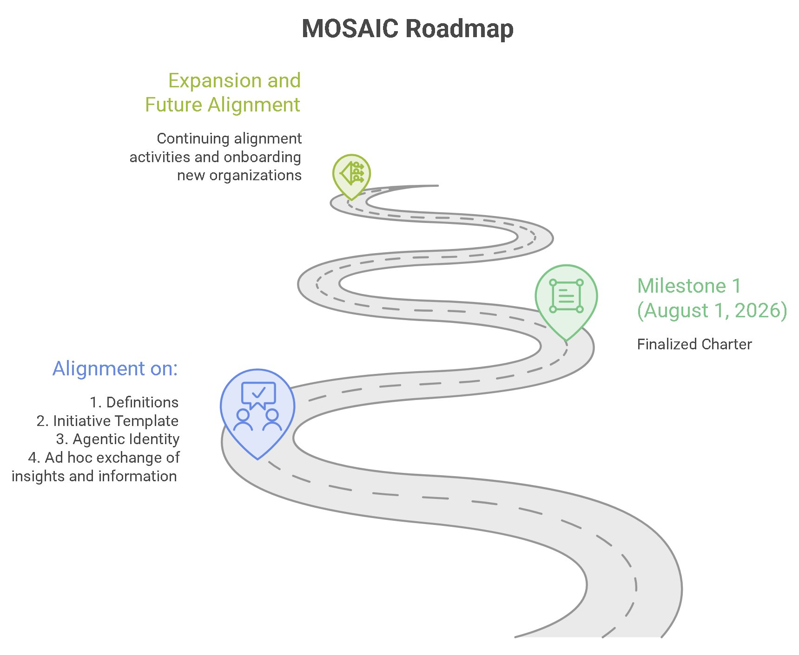

MOSAIC is built around lightweight coordination: a small set of concrete activities that improve consistency and quality across initiatives, without adding committees or process overhead. The path below runs from the alignment work already in motion, through the first formal milestone, and on to growing the collaboration.
Activities already underway
Work to get the participating initiatives aligned on shared foundations:
Get alignment on the essentials
- Shared definitions for foundational terms
- A common initiative template (the "initiative card")
- Agentic identity as a first coordinated topic, with NIST as convenor
- Ad hoc exchange of insights and information between initiatives
Milestone 1 — August 1, 2026
Finalized charter
Detail how MOSAIC and its participants work together, resulting in the MOSAIC charter — then agree on it at an institutional level, in addition to the personal commitments already made. This turns the founding intent into durable, shared rules of engagement.
Expansion and future alignment
Grow the collaboration
- Continue activities for alignment and exchange, and start up new ones
- Onboard more organizations once growth principles are established
MOSAIC is founded on an open-membership model — the intent is for collaboration to remain accessible to any mature initiative working seriously on AI security, rather than an exclusive club.